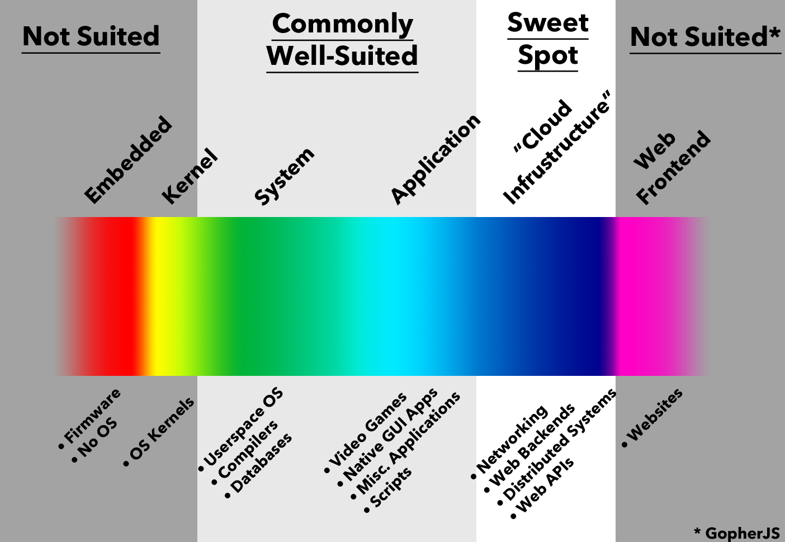

Who am I?
- Sr. Magento Developer at Fanzz
- Rust Lurker
- UVU Adjunct Professor
- Enjoys Cycling, ESports, Programming all the lanuages!
- Programmed a ~10k LOC school project in Go
Why should you trust me?
You shouldn't
Overview
- Why Rust?
- Super Pair Programming
- Conclusion
- Random Randomness
Go Spectrum of Usefullness

Rust Spectrum of Usefullness
?
To early to know, but basically anywhere you'd use c/c++
Super Pair Programming
Lets make a website ... sorta.
- Project Management
- Borrowing/Lifetimes
- Testing
- Impl/Traits
- Concurrency
Borrowing/Lifetimes
- Stack vs Heap Review
- Owner
- Borrowing
- &str/String
- Cow
Testing
- Test Module
- #[cfg(test)]
- #[test]
- Docs and Examples
Impl/Traits
- Traits only apply where in scope
- Can implement a trait for any type
- The compiler can automatically derive some traits
Concurrency
- Not directly part of language
- Rc vs Arc
- thread::spawn and thread::scoped
- Send and Sync
- Mutexes
- Channels
Conclusion
- Finally time to start investing time in Rust
- Std library is young so nightly is the most useful right now
- You will fight the borrow checker and thats good
- The community is great and very helpful!
Questions?
Casey Allred
@sbditto85
sbditto85@gmail.com
programwith.us
Let me know how I can improve!